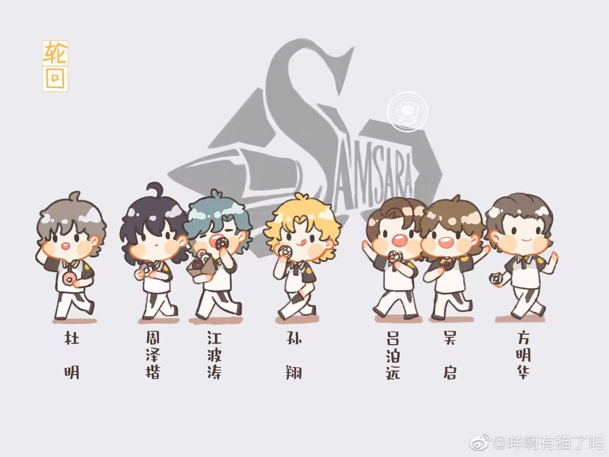
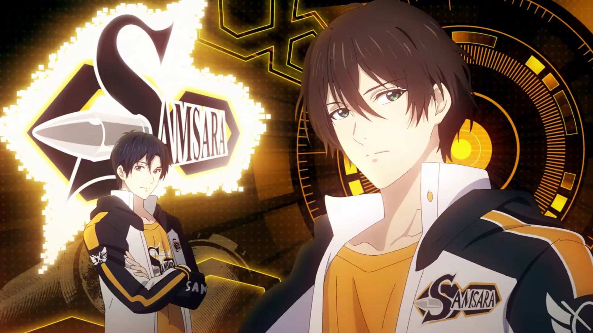
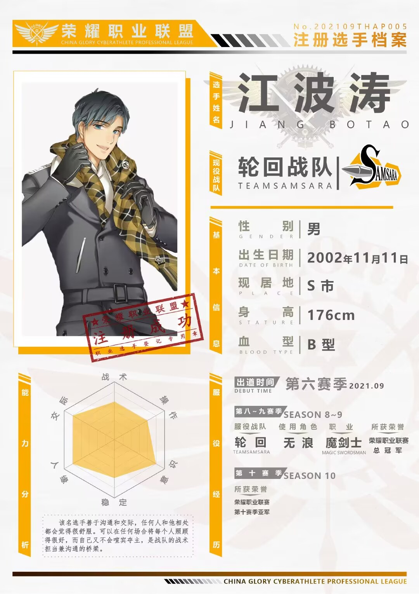

轮回战队

中文名：轮回战队
登场作品：《全职高手》
队长：周泽楷
副队长： 江波涛
成就： 荣耀职业联赛第八、第九赛季总冠军
轮回战队是蝴蝶蓝创作的电子竞技小说《全职高手》中的一支职业战队。
曾在荣耀职业联赛第八、九赛季夺得总冠军，截止第十赛季，是除嘉世外唯一蝉联过总冠军的战队。
前四赛季一直是荣耀职业联盟里中下层次的弱旅，直到第五赛季发掘出了周泽楷这位未来的“荣耀第一人”后开始崛起。
第六赛季招揽了能够将周泽楷与全队串联起来的江波涛，日后轮回战队的主力队员杜明、吕泊远等纷纷在轮回出道，队伍实力稳步提升，自此成为联盟强队之一。
第八赛季从兴欣战队手中买断了技能书攻略，从而使战队角色实力领先全联盟，由此轻松拿下队史首个总冠军，自此成为豪门战队。
第九赛季在原有基础上稳定补强，在总决赛中把握到霸图战队老将们体力不足的弱点从而成功蝉联总冠军，却也发现了战队攻坚能力不足的缺陷，在赛季结束时从嘉世战队收购了孙翔与一叶之秋来弥补，立志建立三连冠王朝。 第十赛季在常规赛中强势无匹，获积分榜第一，超过第二名约四十分，积分创下新高。
周泽楷与孙翔一起斩获“最佳搭档”，组合被称为“双一”。但在总决赛中败于兴欣而屈居亚军。
战队成员
队长周泽楷
生日：11月24日
星座：射手座
血型：A型
身高：181cm
性别：男
职业：神枪手
角色：一枪穿云
银武：碎霜、荒火
出道时期：第五赛季
称号：枪王
别称：小周、泽楷
荣誉：荣耀职业联赛第八、九赛季总冠军，第十赛季亚军，第五赛季最佳新人
性格：不善言辞、内向腼腆。
经历：荣耀联盟第五赛季出道，第八赛季和第九赛季带领轮回战队夺得冠军，首届世界荣耀邀请赛中国队成员。
